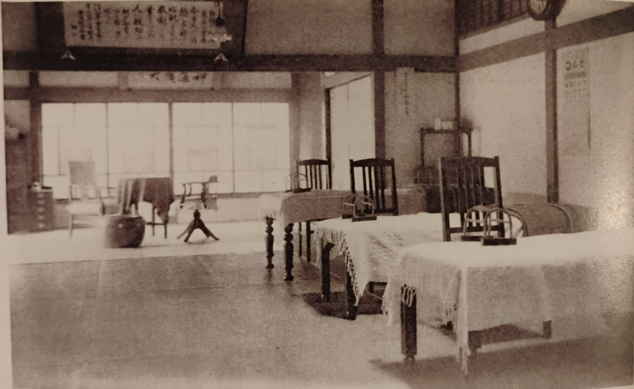

Podczas Seminarium Reiki nowi uczniowe są inicjowani na kolejne stopnie Reiki, a uczniowe już wcześniej inicjowani mogą brać udział w charakterze gościa. Kwoty należne za poszczególne stopnie Reiki są ustalane przez osobę sprawującą funkcję Wielkiego Mistrza Reiki.

Pierwszy stopień Reiki – koszt uczestnictwa: równoważność 150 Euro.
Uczniowie poznają praktykę Reiki. Zazwyczaj Seminarium pierwszego stopnia Reiki trwa od 2 do 4 dni po kilka godzin zajęć każdego dnia (w zależności od możliwości uczestników)
- Czym jest Reiki
- Wykonywanie zabiegu Reiki na sobie
- Wykonywanie zabiegu Reiki na drugiej osobie
- Historia Reiki
- Zasady Reiki
- Znak Reiki
- Zastosowanie Reiki w życiu codziennym
- Cztery Inicjacje – procedura, którą wykonuje mistrz Reiki w celu uruchomienia, wzmocnienia i utwierdzenia przepływu Energii Reiki w osobie inicjowanej.
Każdy uczestnik seminarium otrzymuje dyplom potwierdzający uzyskanie Pierwszego Stopnia Reiki. Wyjątkowym aspektem seminarium jest fakt, że już w jego trakcie oraz po zakończeniu uczestnicy potrafią samodzielnie przekazywać energię Reiki poprzez dłonie.
Dar ten zostaje z nami na całe życie – jeśli tylko zechcemy z niego korzystać, będzie nam zawsze towarzyszył.
Drugi stopień Reiki – koszt uczestnictwa: równoważność 500 Euro.
Od pierwszego stopnia Reiki musi upłynąć co najmniej 3 miesiące, w praktyce często dłużej. Zastrzegam sobie prawo jako Mistrz określić gotowość ucznia do Inicjacji na Drugi Stopień.
Zazwyczaj Seminarium Drugiego Stopnia trwa 2 dni do 3 dni po kilka godzin zajęć każdego dnia (w zależności od możliwości uczestników). Uczniowie zdecydowanie pogłębiają swoje możliwości pracy z Energią Reiki:
- Poznajemy symbole Reiki i ich zastosowanie
- Uzyskujemy możliwość pracy z Energią na odległość
- Uzyskujemy możliwość intensywnej pracy z intencjami
- Pozyskujemy bardzo obszerną wiedzę z zakresu wykorzystania Energii Reiki do pracy nad sobą i do pomocy innym, jednak są to elementy przekazywane tylko na Seminarium Reiki Drugiego Stopnia i nie mogą zostać tutaj opisane.
- Jedna Inicjacja
Każdy uczestnik otrzymuje Dyplom potwierdzający uzyskanie Drugiego Stopnia Reiki.
Trzeci Stopień Reiki – Mistrzowski.
Trzeci Stopień Reiki upoważnia do nauczania Reiki i inicjowania uczniów.
Konieczne są indywidualne ustalenia między uczniem a Mistrzem.